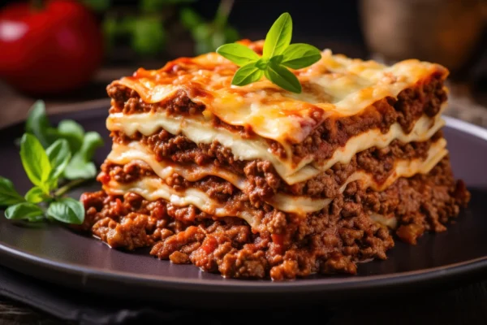
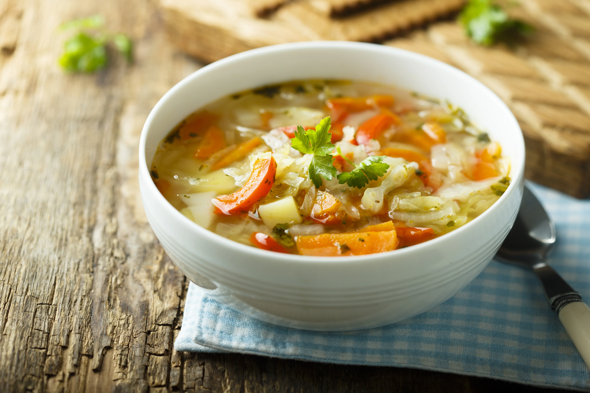

Lasanha à Bolonhesa
postado 20 março 2024

Quando pensamos em comida, é impossível não lembrar das receitas que atravessam gerações, aquelas que nos fazem viajar no tempo e reviver momentos especiais ao redor da mesa. Hoje, quero compartilhar com vocês uma dessas preciosidades da minha família: a nossa receita de Lasanha à Bolonhesa...
Ler maisSopa de Legumes da Vovó
postado 10 abril 2024

Nada é mais reconfortante do que uma tigela fumegante de sopa de legumes caseira, especialmente quando a receita vem dos cadernos de receitas da vovó. Hoje, quero compartilhar com vocês a receita de Sopa de Legumes da Vovó, uma verdadeira fonte de conforto em dias frios ou sempre que precisamos de um pouco de carinho extra...
Ler mais